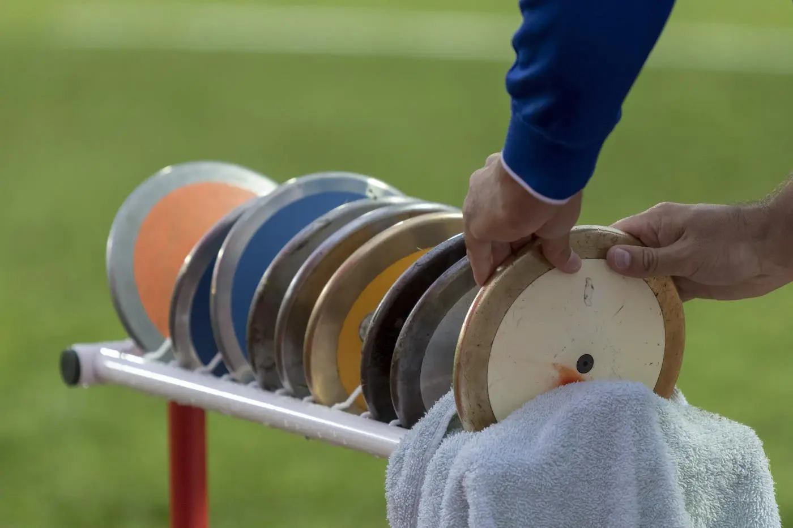
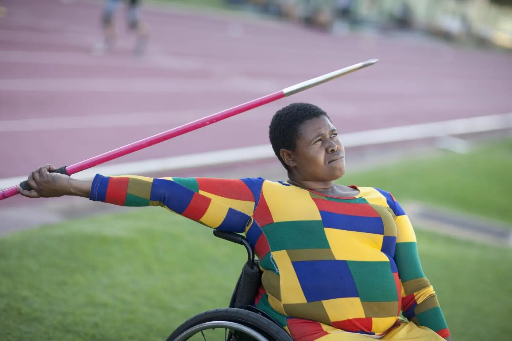
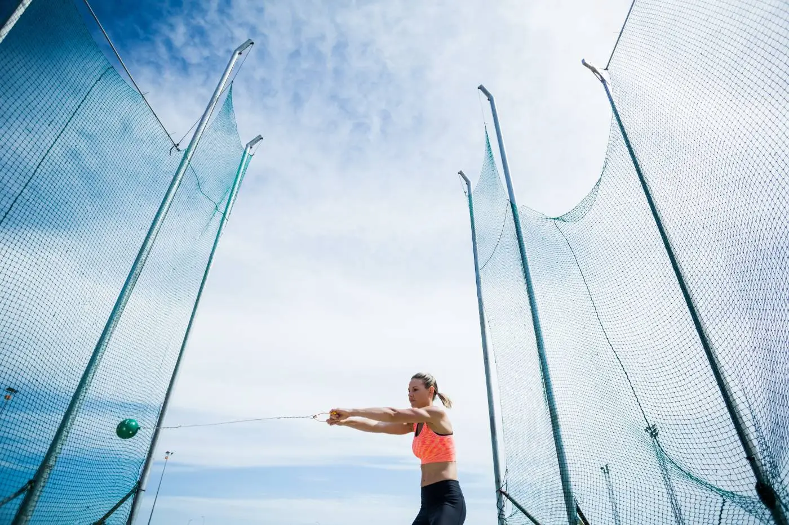
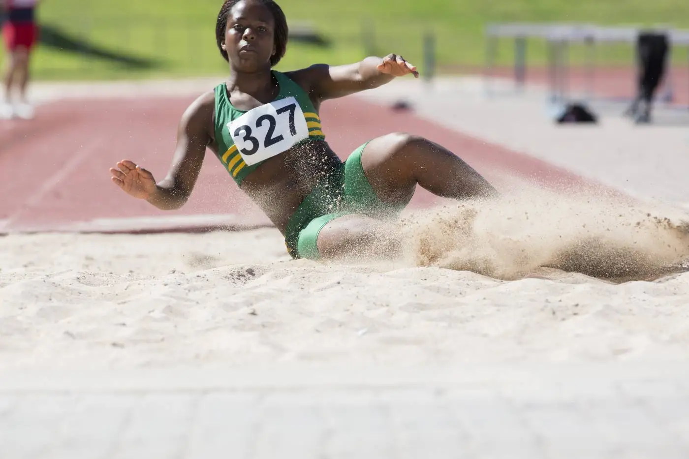
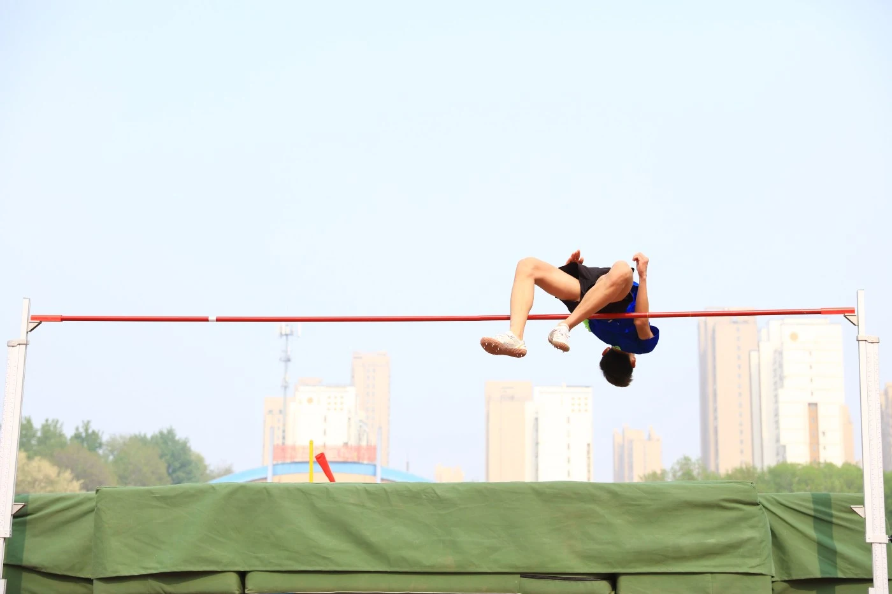

Sprinting is running over a short distance at the top-most speed of the body in a
limited period of time. It is used in many sports that incorporate running, typically as a way of quickly
reaching a target or goal, or avoiding or catching an opponent.

The discus throw, also known as disc throw, is a track and field event in which an
athlete throws a heavy disc—called a discus—in an attempt to mark a farther distance than their competitors.
It is an ancient sport, as demonstrated by the fifth-century-BC Myron statue Discobolus.

The javelin throw is a track and field event where the javelin, a spear about 2.5 m (8
ft 2 in) in length, is thrown. The javelin thrower gains momentum by running within a predetermined area.
Javelin throwing is an event of both the men's decathlon and the women's heptathlon.

The earliest recorded precursors to the modern hammer throw stem from the Tailteann
Games of ancient Ireland, which featured events such as throwing either a weight attached to a rope, a large
rock on a wooden handle, or even a chariot wheel on a wooden axle. Other ancient competitions included
throwing a cast iron ball attached to a wooden handle – the root of the term "hammer throw" due to their
resemblance to the tools.

The long jump is one of the oldest track and field events, having its roots as one of
the events within the ancient Greek pentathlon contest. The athletes would take a short run up and jump into
an area of dug up earth, with the winner being the one who jumped farthest. Small weights (Halteres) were held
in each hand during the jump then swung back and dropped near the end to gain extra momentum and distance.[

The first recorded instances of high jumping competitions were in Scotland in the 19th
century.[70] Further competitions were organised in 1840 in England and in 1865 the basic rules of the modern
event were standardised there. Athletes have a short run up and then take off from one foot to jump over a
horizontal bar and fall back onto a cushioned landing area. The men's high jump was included in the 1896
Olympics and a women's competition followed in 1928.